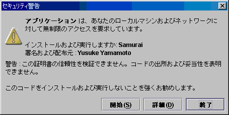
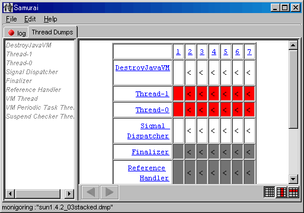
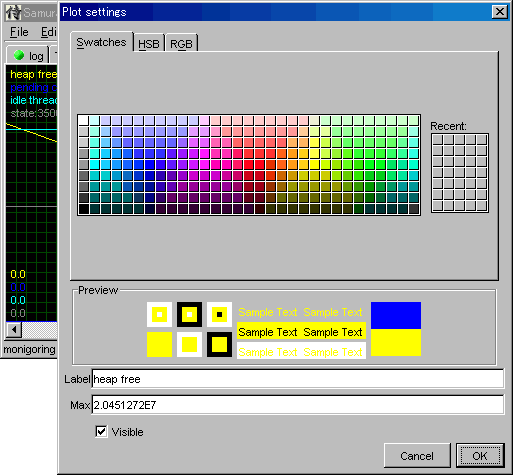
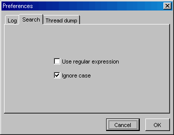

Samurai 2.1.1 †
 launch(requires JDK1.4 or later)
launch(requires JDK1.4 or later)
What is "Samurai" †
Samurai is a tabbed GUI tail tool.
The three major things Samurai does for you are
- Works as a GUI based and multil tabbed "tail -f"
- Picking thread dumps from std/stderr output and colorize them.
- Visualizing the "-verbose:gc" log.
System requirement †
OS: Windows and any flavor of Unix like OS supports JDK 1.4 or later
Tested JVM to inspect: JDK 1.3.x,JDK 1.4.x,JDK5.0 based JVM provided by Apple, BEA, HP, Sun and IBM
Automatic JRE installation is available here(IE only and ActiveX required to be enabled)
How to launch †
There are two way to launch Samurai. Choose suitable one.
Launch Samurai using Java Web Start †
Samurai can be launched via the Internet. This enables
- creating a desktop shortcut or a start menu item with this.
- downloading, installing automatically and keeping it latest.
You can just launch Samurai by clicking the icon below. (requires J2SDK1.4.0 or later installed)
I you don't have any JRE installed on your system, you can simply click here(IE only and ActiveX required to be enabled) to install JRE1.5.
- Launch Samurai->
Java Web Start system will pop up a warning dialog on the first launch which alerts that the application could violate your PC's security. Please click "Start" to proceed.
It's because Samurai needs to get a permission to access your local filesystem which is necessary in reading log files and caching analized data on the temporary directory.
I am very sure that Samurai does NOT contain any vicious code. Please see the source code if you concerns security much. Or, you can decompile the code and look into them.
I am NOT suggesting that you may launch any Java Web Start application. You need to be aware that technically a Java Web Start application could crack your PC and cause a fatal casualty.

fig. 1 Security alert dialog in Japanese
Launch from the command prompt †
The binary is available for download at http://yusuke.homeip.net/samurai/samurai.jar
You can simply double-click to launch Samurai on your desktop or type as following in your command prompt
java -jar samurai.jar
Automatic update is not available with this way.
Please check and download latest version manually.
Analyzing thread dumps †
Initial view †
You'll see a window like fig.2. A tab named "Thread dump" will appear after you drag and drop a log file onto the window.

fig. 2 an initial view

fig. 3 the "Thread dump" tab
"Thread dump" tab †
You'll see the analized result by clicking the "Thread dump" tab.
Samurai colorize idle threads in gray, blocked threds in red.
There are three result view.
- table view(fig. 4)
- all threads view(fig. 5)
- chronological view(fig. 6)
In many case you'll use the table view to decide which thread be inspected, the chronological view to understand the thread's behavior.
You should take care especially threds always in red.

fig. 4 Table view
fig. 5 All thread view
fig. 6 Chronological view
Analyzing heap usage †
Every JVM accepts "-verbose:gc" option which will show you GC behavior precisely.
This is necessary when you detect memory leaks and decide if heap is reserved enough.
Samurai gives you a nice and understandable view of although the original text is very hard to read.
Red line stands for the heap usage before a GC.
Yellow one stands for the heap usage after a GC.
Gray one stands for the time spent for a GC.
You can copy the graph to the system clipboard by pressing Ctrl+C (Mac -> Cmd+C).

fig. 7 Memory tab
Visualizing CSV files †
Samurai provides you a realtime and visualized look for CSV files.
You can copy the graph to the system clipboard by pressing Ctrl+C (Mac -> Cmd+C).

fig. 8 CSV graph
Customizing the graph view †
You can customize these graph views.
Just click the label located left most above and choose any color and label you like.

fig. 9 customizing the graph view
Search incrementally †
Samurai is not only thread dump and Komuso analyzer but a convenient log viewr.
It works just like Unix's "tail -f filename", and you can search the text.
The searching function will be triggered when you type any texts.
A search result will be hilighted if there is a match. You can press Ctrl+G(Mac -Cmd+G) or F3 for forward search, Shift+Ctrl+G(Mac- Shift+Cmd+G) for backward search.
You can also enable / disable the case sensitivity and regular expression.

fig. 10 hilighting a match

fig.11 config dialog
FAQ †
Q1. Is Samurai built especially for WebLogic?
A1. No. Samurai can analize any kind of Java program. But note that Samurai is tested on ly with Apple SDK1.4.2_05, BEA JRockit 7.0SP4 / 8.1SP2 / 8.1SP4 and Sun SDK 1.3.1_08 /1.4.1_05
Q2. How does Samurai named after?
A2. I just didn't want to name it like "Thread analyzer".
Q3. Can I launch Samurai using JDK1.3.x or earlier?
A3. No, you can't. It's because Samurai uses specific API comes with JDK1.4 or later. But note that it doesn't suggest Samurai can't analyze logs output by JDK1.3 or earlier.
Q4. CSV visualization looks pretty useful. Is it possible to visualize CSV files that are containing not only numerals but strings.
A4. Yes. A string data will be protted using is hash value.
Q5. How does Samurai recognize a CSV file as a CSV file?
A5. By its extension.
Q6. What is "Kill Bill" mode?
A6. With Kill Bill mode, you'll feel like you became a Katana sword master. Type "kill bill" to enter the mode.
Q7. What is "Kill Bill2" mode?
A7. With Kill Bill2 mode, you'll feel like you mastered the Five point palm exploading heart technique.
Q8. "What is the Matrix" mode?
A8. With the Matrix mode, you'll feel like you can see an another world through your log file. Type "what is the matrix" to enter the matrix.
License †
- Anyone can use Samurai for commercial and non commercial way. Anyone can redestribute the Samurai's copy without any modification.
- You can modify the Samurai's code but you can't distribute modified codes across internet.
Disclaimer notice †
- You need specialized Java knowledge in order to analyze thread thread dumps. Samurai will help you to decide the cause of hungup or slowdown, I don't guarantee the resolution of bottlenecks.
- Yusuke Yamamoto don't accept any responsibility regarding this software.
What's new †
- 2.1.1 released(2006/5/12)
- added support for -verbosegc log generated by IBM JDK1.4.2(tested with JDK1.4.2_08)
- fixed: some blocked threads in IBM Javacore files were not detected
- 2.1 released(2006/5/11)
- added automatic Deadlock detection feature
- added "Clear thread dump" button
- added anchor and hyperlink to the stack lines which are waiting to lock certain object and holding certain object
- lock information is added to IBM Javacore stacktraces
- 2.0.6 released(2006/5/5)
- added "Save thread dump As HTML"
- added support for JRockit thread dumps triggered by weblogic.Admin command
- 2.0.5 released(2006/4/29)
- improved rendering performance on thread dump view
- improved incremental search performance
- added support for WebLogic? Server 9.x thread name
- fixed: graph view was unable to copy it's graph
- fixed: inverse behavior of search panel's "Match Case" checkbox
- 2.0.4 released(2006/1/16)
- added support for JRockit1.4.2_08 verbosegc log
- optimized searching performance
- 2.0.3 released(2006/1/13)
- 2.0.2 released(2006/1/6)
- added visual feedbacks for drag events
- fixed garbled characteres in CSV Panel when using multibyte characters
- 2.0.1 released(2006/1/3)
- now Memory Panel works with log files output by -Xloggc option
- 2.00 released(2005/12/31)
- added multil file monitoring feature
- supported Application menu on Mac OSX environment
- added "open recently used" feature
- now CSV graph panel works only for those files that end with ".csv"
- non-existing threads are dyed black in table view
- added Matrix mode
- released 1.2.9(2005/10/19)
- fixed multiple file input issue to support IBM's javacore.
- added kill bill mode
- released 1.2.7(2005/8/26)
- fixed parsing issue when thread dump contains duplicated thread names
- supported multiple file input for IBM's javacore. Multiple files will be read by lexicographical order.
- supported Mac OS X's screen menubar(need a relaunch from jnlp not from Application)
- supported Mac OS X's brush metal LAF(need a relaunch from jnlp not from Application)
screen menubar and brush metal LAF are not supported with Applicationized samurai due to an OS limitation. You need to launch from .jnlp in order to enable these feature.
- released 1.2.6(2005/8/23)
- supported IBM JDK1.4.0/1.3.1 javacore files
- released 1.2.5(8/18/2005)
- supported JRockit1.5.0_03(Bundled with WLS9.0GA)
- released 1.2.4(8/17/2005)
- supported JRockit1.4.2_05(Bundled with WLS8.1SP4)
- released 1.2(4/4/2004)
- Now Samurai can visualize Komuso and CSV data. It should be convenient in case you are tuning or profiling WebLogic and Java applications.
- released 1.1(3/31/2004)
- Implemented verbose:gc log analyzing function which is necessary when you decide the heap size and tune garbage collection parameters.
Feedback †
Paypal Donation †
If you feel Samurai makes your life easier, please do consider making a donation!

Counter: 62170,
today: 67,
yesterday: 76
Copyright 2003-2006 (c) Yusuke Yamamoto All rights reserved.
![[PukiWiki]](../samurai/image/pukiwiki.png "[PukiWiki]")
{kind=link}
{kind=link}
{kind=link}
{kind=link}